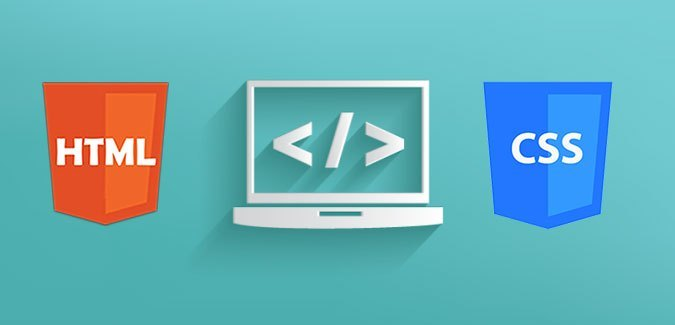

OVI - Diseño de sitios web

Abordar temáticas introductorias referentes al
diseño web. El objetivo principal de este Objeto Virtual de Información (OVI) es adquirir nuevos
saberes y conocimientos alusivos a las temáticas sobre diseños de sitios web, GIT/GITHUB, HTML5 y CSS3.
Objetivos específicos:
- Aprender a usar el servicio gratuito de GitHub Pages.
- Fortalecer conocimientos sobre la estructura básica de HTML5.
- Comprender el comportamiento del Modelo de Caja en sitios web
- Adquirir conocimientos sobre los tipos de estilos en CSS3.
- Conocer las propiedades básicas de CSS.